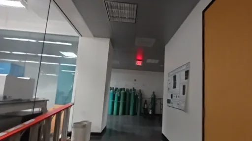
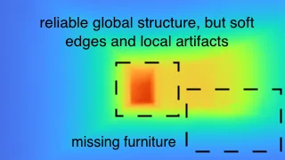
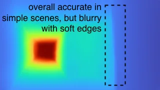
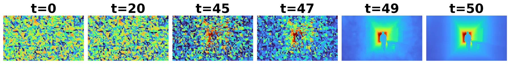
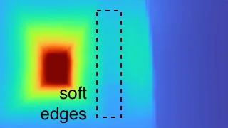

GRADE：退化视觉下的单帧生成式雷达深度估计
GRADE: Single-Frame Generative Radar Depth Estimation Under Visual Degradation
这是一条从可穿透退化环境的雷达几何量测到高密度深度的可靠感知链路。对状态估计的直接启发是把生成式细节恢复限制在 metric radar depth 的条件下，并把视觉退化和深度置信度作为后端权重，而不是让生成模型无约束地决定尺度。
frames
buildings
MAE
MAE
作者、单位与技术谱系 · Research context
作者与单位
研究脉络
- mmWave radar metric depth方法基座关系：沿用雷达测距在烟雾/黑暗中的穿透性与尺度优势。[论文原文]
- latent diffusion depth refinement方法上游关系：借助生成式深度先验恢复低角分辨率雷达缺失的结构细节。[论文原文]
- GRADE本篇推进关系：把 radar conditioning、diffusion refinement 与退化视觉 adapter 组合为单帧系统。[arXiv 摘要页]
合作网络
- 论文作者共同署名Bin Zhao、Patrick Chiou、Nakul Garg → GRADE关系：共同署名[官方 arXiv HTML]
- GRADE projectGRADE 作者团队 → phi-lab-rice.github.io/GRADE关系：论文明确给出的代码与数据项目页[官方项目页]
只记录公开署名、单位和官方项目关系；未推断导师/师生关系。
方法本质拆解 · What actually changed
训练改变了什么？
模型训练粗粒度雷达深度模块、latent diffusion 深度细化模块和 RGB pixel-space adapter；不是只在测试时把 RGB 深度结果做后处理。训练覆盖清晰、烟雾退化和遮挡条件，且通过退化训练让视觉分支在能见度下降时接近雷达条件路径。
新增了什么约束？
主要约束是每一步扩散去噪都接收 radar-derived metric depth，因而生成细节受雷达距离尺度锚定。RGB cues 只是可用时的残差条件，并不是在退化场景中取代雷达量测；论文没有把输出直接写成状态估计的显式概率因子。
推理时做了什么？
推理先从单帧 radar spectra 得到 coarse metric depth，再经过条件扩散恢复稠密结构，最后按可用视觉信息通过 adapter 融合残差。它是单帧感知管线，不是时间序列滤波、回环或全局 bundle adjustment；与 VIO/SLAM 的优化接口需要下游实现。
方法本质是什么？
GRADE 改变的是‘稀疏且低角分辨率雷达如何变成稠密深度’这一观测补全不确定性，而不是直接优化相机位姿。雷达提供尺度和范围，扩散模型提供结构先验，退化训练控制视觉支路的失效方向，三者共同形成对恶劣环境更稳健的深度观测。
单帧雷达 metric depth + 退化感知 RGB 条件，约束扩散模型只在雷达尺度锚定下恢复结构，从而在烟雾中保留可用于状态估计的深度。

动机与问题Motivation
动机与问题
RGB 深度模型在烟雾、雾和黑暗中会因光学退化失效，而 mmWave radar 能提供距离信息但角分辨率低、观测稀疏。论文要解决的是如何用生成式视觉先验补足结构细节，同时避免扩散模型在不可见区域凭外观幻觉改变 metric scale。
方法Method
方法总览
系统先把原始 4D radar spectra 映射为 coarse metric depth，再把该深度作为 latent diffusion backbone 每一步去噪的条件，生成高分辨率深度。另有 pixel-space adapter 在清晰图像可用时吸收残差 camera cues，并在 visibility 下降时训练成接近 radar-conditioned path。
关键技术细节
雷达模块负责把 range/angle 等几何信息变成稠密但粗糙的 metric depth；扩散模块负责结构细化而不是重新估计尺度。RGB adapter 使用 clear、smoke-degraded 和 occluded 输入训练，核心设计是让视觉支路在退化时逐渐让位给雷达条件；完整实现细节、噪声日程和各分支权重应以论文 HTML 的 Implementation 小节为准。

实验Experiments
实验设置
实验使用约 95K frames、12 buildings，并覆盖 clear、real smoke 和 occluded 条件；论文还按 smoke density、radar sparsity/range 与 scene complexity 分析稳定性。主要指标是 metric-depth MAE，并与现有 RGB/雷达深度基线比较；官方 HTML 的表格和 Evaluation 小节是数字核验来源。
实验数字与比较
摘要与官方 HTML 报告 clear 条件 MAE 为 0.303 m，real smoke 条件 MAE 为 0.313 m，数据规模为约 95K 帧、12 座建筑。论文还报告跨烟雾密度、雷达稀疏性/距离和场景复杂度的分组结果；具体各组 baseline 数值应以表格逐项复核，不能用摘要数字替代。
消融/失败边界
模块消融至少应区分 radar depth module、diffusion refinement module 和 RGB visual guidance module；去掉 radar 条件会失去在烟雾下的尺度锚定，去掉 diffusion 会降低结构细节，去掉 RGB guidance 预计主要损失 clear 场景的细节收益，具体幅度以官方表格为准。失败边界包括雷达过稀、量程覆盖不足、雷达—相机标定误差和训练分布外的烟雾/遮挡，论文对这些边界的下游状态估计影响仍未完全证明。
局限与迁移Limitations & Transfer
局限与待核验
作者明确讨论的方向包括传感器可用性、视觉退化和雷达稀疏性；本文主要证明单帧深度质量，并不等价于已经证明长期 tracking 或 VIO 稳定。待核验项包括深度置信度是否校准、时间一致性、雷达异常点对扩散输出的影响，以及接入因子图后对 NEES/NIS、尺度漂移和重定位率的变化。
与你研究路线的关系
可迁移接口是‘雷达几何量测 → 条件生成式深度 → 带退化置信度的深度因子’，适合与视觉—惯性状态估计共享尺度和可见性权重。下一步实验应在同一序列中对比 RGB-only、radar-only、GRADE 和 oracle depth，记录 depth calibration、尺度漂移、Hessian 条件数、NEES/NIS 与 GPU 延迟，从而区分感知收益和后端收益。
{kind=link}

{kind=link}

{kind=link}

{kind=link}
